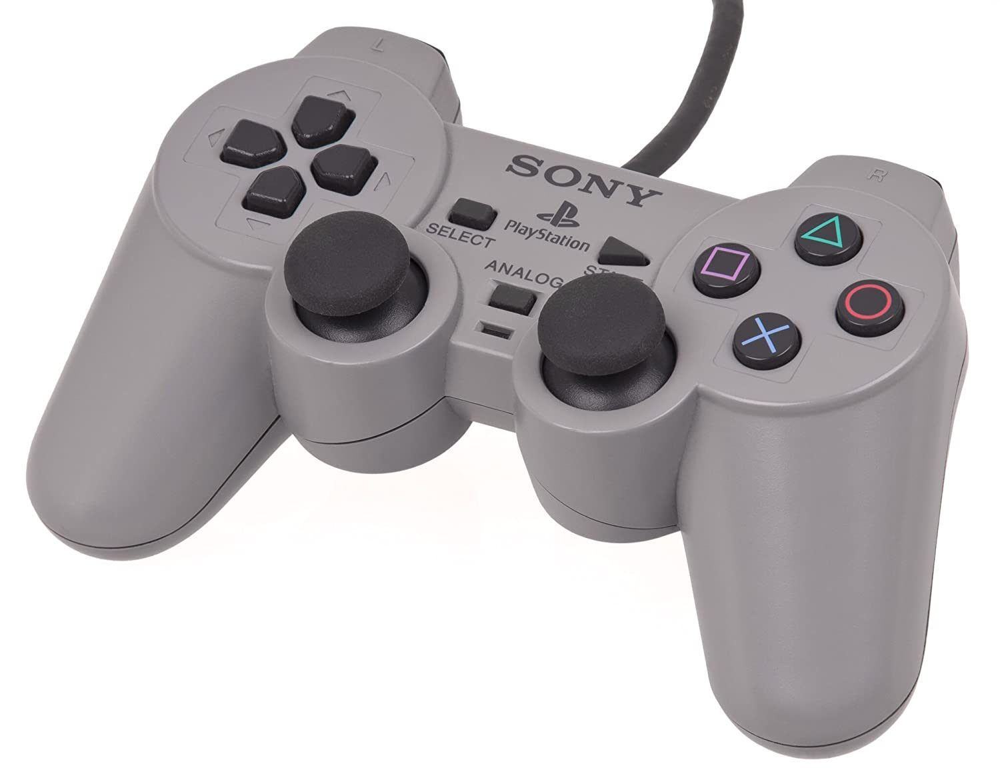

1997 PlayStation DualShock Controller
Considered by many to be the greatest Video Game controller of all time, on the 20th of August 1997, the PlayStation DualShock controller, otherwise known as the SCPH-1200 controller, was released. Interestingly enough, this controller did not release with a console.
This controller formed the design basis for all PlayStation controllers prior, as they all feature the D-Pad on the left side, 2 triggers, 2 shoulder buttons, plus the Triangle, Circle, Square and X button on the right side, and the analog sticks. placed in the middle of the controller.
This was the successor to the conveniently-named PlayStation Controller, or the SCPH-1010. The DualShock built on the SCPH-1010 by adding the signature 2 joysticks on the middle-bottom of the controller. The "Shock" portion of the controllers' name derives from its dual-rumble motors integrated in the controllers grips. This outshined the Rumble Pak for the N64 by including more motors, which were internal, and did not need a battery.
The 1997 PlayStation DualShock Controller
Image Credit: Simple Wikipedia